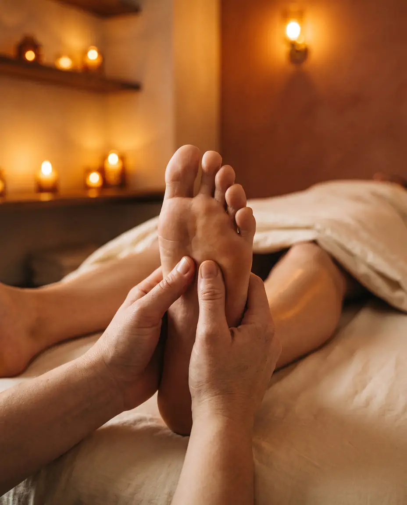

Every Point Has a Purpose.
Reflexology in Salt Lake City
Targeted pressure on the reflex zones of the feet, hands, and ears that map to organs and systems elsewhere in the body. Fully clothed, no oil, no table required. Available same-day at our downtown SLC studio, seven days a week.

What Is Reflexology?
The Whole Body, Through the Foot
Reflexology maps the entire body onto the feet, hands, and ears. By applying specific pressure to these reflex zones, a skilled therapist can promote healing and balance in organs and systems far removed from the foot itself. Press a point near the ball of the foot and the lungs respond. Work the arch and the digestive system softens. It is precision therapy through the body's most accessible surfaces.
At Elite Spa Utah, our sister location, reflexology sessions begin with an assessment of your specific health goals and areas of concern. The therapist then works systematically through your reflex map, giving extra attention to zones that feel congested, tender, or blocked. The result is a full-body recalibration delivered entirely through your extremities.
Available At Our Sister Location
Reflexology Is Offered at Elite Spa Utah
J Massage SLC and Elite Spa Utah are sister studios under the same ownership. Foot reflexology lives on the Elite Spa menu, book it directly with their team at the State Street location.
1136 S State Street, Salt Lake City, UT 84111
Open daily, same-day appointments available.
Reflexology is performed at Elite Spa Utah, our sister location. Book online at Elite Spa.
Why It Works
Five Ways Reflexology Restores the Body
Reflexology reaches where no other therapy can, systemic, precise, and profoundly restorative from the ground up.
Stress Reduction
Over 75% of disease is estimated to be stress-related, and reflexology works directly on the nervous system pathways that drive the stress response. A single session can lower cortisol, slow heart rate, and produce a deeply calm, centered state that persists for hours after treatment.
Improved Organ Function
By stimulating specific reflex points that correspond to the liver, kidneys, digestive tract, lungs, and other organs, reflexology promotes better function throughout the body's systems. Many clients report improvements in digestion, elimination, breathing, and energy levels after regular sessions.
Pain Relief
Reflexology triggers the release of endorphins, the body's natural pain-relieving chemicals, while simultaneously interrupting pain signaling through the nervous system. It is particularly effective for headaches, back pain, sciatica, and pain associated with plantar fasciitis and other foot conditions.
Better Sleep
Reflexology's calming effect on the nervous system makes it one of the most effective treatments for insomnia and disrupted sleep. The solar plexus point, located in the center of the foot's arch, is particularly powerful for promoting deep relaxation and preparing the body for restorative sleep.
Improved Circulation
Reflexology stimulates blood and lymphatic flow throughout the entire body by working the circulatory reflex points in the feet. Improved circulation means better oxygen delivery to cells, more efficient toxin removal, and faster healing, all without a single stroke being applied above the ankle.
Common Questions
Everything You Want to Know
-
Reflexology is a therapeutic practice based on the principle that specific points, called reflex zones, on the feet, hands, and ears correspond to particular organs, glands, and systems throughout the body. By applying precise pressure to these zones, a trained reflexologist can influence the corresponding body part, promoting healing, reducing tension, and restoring functional balance. Rooted in ancient Egyptian and Chinese healing traditions, reflexology has been refined over centuries into a sophisticated system that modern practitioners continue to study and develop.
-
No, reflexology and foot massage are fundamentally different practices, though both work with the feet. A foot massage focuses on relieving tension in the muscles and soft tissue of the foot itself. Reflexology uses specific, intentional pressure on mapped reflex points that correspond to distant organs and body systems. The intent is systemic: to improve the function of the liver, kidneys, digestive system, lungs, and other organs by stimulating their corresponding zones. Many clients are surprised to feel sensations in completely different parts of their body while their feet are being worked.
-
Reflexology has been used to support a wide range of conditions, including chronic stress and anxiety, insomnia, digestive disorders, hormonal imbalances, headaches and migraines, back and neck pain, sinus congestion, and general fatigue. It is particularly valued by clients managing chronic conditions who want a gentle, non-invasive complement to conventional care. While reflexology is not a replacement for medical treatment, many clients report meaningful symptom improvement with regular sessions.
-
At J Massage SLC, reflexology sessions are available in 30-minute and 60-minute formats. A 30-minute session provides a focused treatment covering the primary reflex zones of the feet, ideal for targeted concerns or as a complement to another service. A 60-minute session allows for a comprehensive mapping of all reflex zones in the feet, hands, and ears, along with deeper work on areas of specific concern. For new reflexology clients, we recommend the 60-minute session to allow the therapist to fully assess your reflex map and provide a complete treatment.
Ready to Unlock the Map?
Every point in your feet holds a key. The reflexologists at Elite Spa Utah, our sister location, know exactly which zones your body needs worked, and how to work them. Same-day appointments available in Salt Lake City.
The Gift That
Actually Gets Used.
No re-gifting. No regrets. A J Massage SLC gift card is the most thoughtful thing you can give, and the most eagerly redeemed. Delivered instantly by email. Never expires.
Choose an Amount
Redeemable for any service or add-on. No expiration date. Email delivery in minutes.